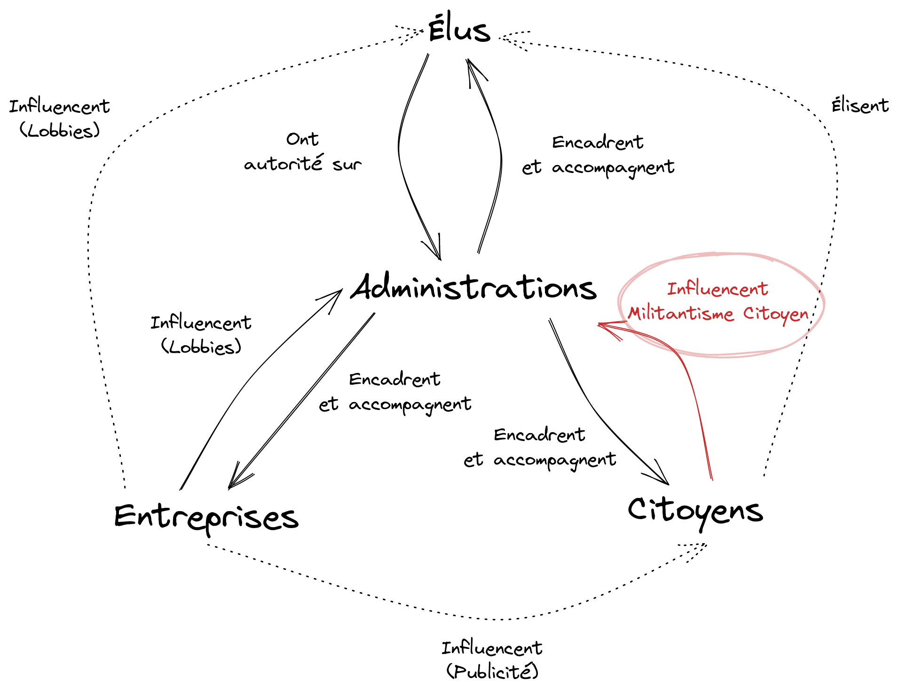

Citoyenneté Militante
Manifeste pour un Militantisme Administratif

Le citoyen n'est plus.
Dénudé peu à peu de ses droits, le citoyen contemporain n'est plus qu'invité à se prononcer à chaque nouveau
mandat afin de renouveler ses représentant. Ce sont ces mêmes élus qui n'ont que leurs convictions, bien souvent
peu ambitieuses et radicales, pour réellement effectuer une rupture nette et nécessaire face aux périls qui nous
menacent.
Au fil des décennies nous nous sommes donc enfoncés inexorablement dans un marasme citoyen, grandissant à chaque
élections. La représentativité, si chère à notre démocratie, n'est plus que l'ombre d'elle même; en témoigne
l'abstention toujours plus importante.
La crise environnementale et sociale nécessite aujourd'hui des changements profonds, rapides et désormais
radicaux de notre société sur l'ensemble de son organisation et cela sur la totalité des échelles, de
nos
communes aux instances internationales les plus hautes.
Pour parvenir à ces changements plus que nécessaires nous devons nous réarmer, nous citoyens, d'outils efficaces
que nous pouvons utiliser le plus rapidement et le plus massivement possible afin d'influencer et de contraindre
les représentants, quitte à directement se substituer à eux en prenant les devants.
Les militants luttant contre l'effondrement de la biodiversité, pour la limitation des causes engendrant la
dérive climatique, ainsi que l'ensemble des militants des luttes sociales cherchent aujourd'hui des leviers
permettant de réellement influencer et de contraindre, et cela de façon massive, les acteurs contre lesquels ils
résistent.
Aujourd'hui, tout outil qui sera considéré comme efficace sera révolutionnaire.
Un élément central, nos administrations
En prenant un peu de recul nous pouvons observer que ces luttes se sont principalement concentrés sur trois
acteurs: les politiques, les entreprises ainsi que les autres citoyens.
- Nous avons tentés d'influencer et de dénoncer les politiques et leurs décisions destructrices.
- Nous avons tenté de manifester notre opposition et de résister face à des entreprises dont les actions sont
dévastatrices pour nos territoires, nos sociétés et nos communs.
- Nous avons finalement tenté de sensibiliser nos pairs, nos parents, nos amis, nos connaissances afin de les
mobiliser face aux conséquences de ces actions ravageuses.
Ces trois acteurs reposent, en France, sur un élément central dont nous nous sommes aujourd'hui que peu
intéressé. Cette véritable colonne vertébrale du système concentre entre-autre les pouvoirs d'application des
décisions prises par nos élus, de la mise en place concrète des réglementations ainsi que de la transposition
des éléments légaux et des politiques nationales dans les textes, plans, règlements et autres documents
réglementaires.
Nous parlons ici de nos administrations.

Si les politiques sont à la tête de
celles-ci, le temps de leur mandat, nos administrations elles restent et
persistent au cours du temps. Elles sont les mains et les jambes qui s'activent pour écrire, organiser et
appliquer les décisions prises.
Si le politique décide de taper du marteau, ce sont les administrations qui tiennent le marteau et
martèlent.
Nous ne sommes pas les premier à nous êtes intéressés et à vouloir influencer celles-ci. Les lobbies, les
entreprises et autres groupes de pressions jouent déjà avec elles depuis bien longtemps. Ils écrivent les lois
et textes réglementaires, ils les influencent.
Les administrations ont un devoir de neutralité mais ces pressions extérieures, les décisions quelles prennents
(ou qu'elles ne prennent pas, ou tardivement !) les politises très fortement.
Nous devons à notre tour influencer ces administrations, ne plus attendre que nos entreprises et nos
politiques
s'en chargent.
Nous citoyens pouvons prendre en main, contraindre et influencer nos administrations pour les diriger vers où
nous le souhaitons. Nous coupons alors l'herbe sous le pied de certains élus (tout en aidant parallèlement
certains autres),
des entreprises habitués à échanger seuls
avec elles et à faire subir au travers d'elles leurs décisions aux citoyens.
C'est à notre tour d'étendre le périmètre de notre citoyenneté et de militer auprès d'elles pour nos
droits, nos
visions, de devenir tout autant de lobbies et de groupe de pressions et de les pousser vers où nous le
souhaitons.
Pourquoi cibler les administrations ?
La société a le droit de demander compte
à tout agent public de son administration
Article 15 de la Déclaration des droits de l'homme et du citoyen
Nos administrations ont une obligation de transparence. Elles ont obligation (sauf cas spécifiques) de
vous transmettre les documents dans le cadre de leurs compétences, de vous expliquer les processus et les
méthodologies qui ont permis l'élaboration de ceux ci.
Cette obligation de transparence est régie par un code les contraignant et forçant dans l'exercice de leurs
services: le Code des relations entre le
public et l'administration.
Les administrations sont stables dans le temps. Nos administrations résistent aux lavages des mandatures
successives. Nous pouvons notter toutefois que les politiques "déteignent" souvent sur celles-ci au fil
des années.
Si nous arrivons donc à influencer ou changer certaines de leurs décisions, celles-ci auront un impact long dans
le temps.
Les décisions administratives se doivent d'être cohérentes. Du fait de leur neutralité, une différence de
traitement entre deux décisions similaires pourra être notifiée et corrigée, c'est un angle d'attaque assez
courant qui permet de demander aisément une homogénéisation des droits lors d'une demande.
Il existe de nombreux moyens pour les interroger, soit en répondant à leurs solicitations, lors de consultations
ou sondages soit de façon plus actives par des solicitations volontaires (individuelles et/ou collectives).
Il existe également des outils ou méthodes permettant de "forcer la main" dans certains cas. La CADA (La Commission d’accès aux documents administratifs) peut, par exemple, être
saisie afin de forcer une administration à vous délivrer certains documents. Vous pouvez également, pour des cas
plus graves et de façon plus globale, contester ou attaquer des décisions administratives au Tribunal Administratif voir au Conseil d'État suivant le niveau de
votre demande et de l'administration en question.
Le Militantisme Administratif,
une action en quatre
actes
Le Militant Administratif agit en quatre étapes:
-
La Préparation Il s'informe, se rapproche, analyse et comprend comment les administrations qui
possèdent les compétences
sur les sujets sur lesquels il milite fonctionnent.
Il comprend les compétences et responsabilités liées à ces administrations (pour casser les boucles de
renvois de responsabilités) et le cadre dans lesquelles elles agissent.
"Il s'agit d'une simple formalité administrative"
Les 12 travaux d'Astérix, René
Goscinny et Albert Uderzo (1978)
Il repère les documents centraux avec lesquelles ces administrations agissent et cherche des cas
particulier qui pourrait l'intéresser. Pour restreindre les recherches il est fortement recommandé de
chercher plutôt des document qui ont une porté locale (Plan Local d'Urbanisme, arrêts
municipaux…).
-
La Prise de Contact Il repère les manquements, les "erreurs", les retards entre les textes, les
plans et les réglementations en vigueur et s'informe sur le calendrier d'évolution de ces éléments (ne
pas hésiter à contacter
directement les administrations pour en savoir plus, toutes les dates ne sont pas publiques), notamment
lors de transpositions de
textes, ainsi que sur les moyens de contribuer ou influencer ceux-ci.
Les prises de contact peuvent être individuelles ou collectives, attention toutefois de ne pas "faire
peur" à cette étape en venant directement avec un collectif. Parfois une simple solicitation
individuelle peut être plus efficace (jouer l'agneau innocent).
Il s'informera sur le fond, mais aussi si la forme. Reconstituon d'un organigrame, des relations. Au
téléphone il pourra par exemple "tenir la jambe" pour essayer de connaitre les histoires de couloir
(afin de savoir pourquoi certaines demandes prennent plus de temps, "qu'est ce qui bloque l'avancée de ma demande ?"…).
 "Pepe Silvia"
"Pepe Silvia"
It's Always Sunny In Philadelphia (2008)
-
La Demande Grâce aux informations récupérées il propose alors des "corrections" et ajustements
(les guillemets ne sont pas anodins, certaines erreurs sont plus
suggestives que d'autres) en s'appuyant sur les réglementations en vigueur et en utilisant tout moyen de
pression à sa disposition pour s'assurer de l'intégration de ces changements aussi rapidement que
possible
au sein de ces documents.
Toute demande se doit d'être la plus précise, documentée, neutre et désintéressée afin de s'assurer qu'elles soient prise en compte rapidement et qu'un minimum d'aller retours soient fait entre les services. N'hésitez pas à éviter les boucles de renvois ("J'ai déjà pris contact avec vos collègues et ils m'ont dit de m'addresser directement à vous"…).
Ne pas hésiter à paralléliser les demandes, à différent niveaux. Tester certaines demandes qui sortent un peu du cadre si vous avez des doutes.
"On sait jamais, sur un malentendu, ca peut marcher."
Les Bronzés font du ski , Patrice Leconte et (1979)
-
Le Suivit Il fera le suivit de sa ou ses demandes via des relances, en surveillant le calendrier (date de rendu de décisions, votes…).
Si il n'y a pas de réponse claire (négative ou positive) il continuera à relancer, tout en trouvant un bon équilibre, des relances trop rapprochées peuvent avoir l'effet inverse qu'escompté.
Dans certain cas les demandes peuvent alors être escaladés, en copie à d'autres administrations ou via une demande aux instances de contrôles (CADA), voir via la constitution d'un dossier et d'une attaque dans un tribunal (si la demande est pleinement légitime, formulée et qu'il y a réellement une volonté d'aller "jusqu'au boût".
Cette méthodologie en apparence simple nécessite un bon suivit des demandes faites au cours du temps. Au vu de
l'étendue des connaissances nécessaires sur les différents éléments il est également fort probable que certains
militants se spécialisent dans des domaines particulier afin d'être plus efficaces et informés sur les sujets à
traiter. Ils peuvent alors plus facilement résumer leurs domaines et compléter leurs actions vis à vis d'autre
militants ayant eux même fait l'effort de vulgarisation nécessaire.
Les administrations ne sont ni strictes, ni irréprochables. C'est cette vision qui anime le cœur même de
la
réflexion qui gravite autour
du concept de Militantisme Administratif. Vous découvrirez que beaucoup de décisions qui vous semblent, au
premier abord, sérieuses et justifiées sont prises au final sans fondements réels ou alors avec des
justifications plus qu'hasardeuses ou teintées d'une idéologie.
C'est dans ces cas là que vous pourrez alors les questionner pour essayer de comprendre ces décisions et trouver
un moyen de les modifier suivant ce qui vous semble le plus en accords avec vos convictions profondes.
Le Citoyen Militant prendra alors au cours de ses actions successives le rôle de lanceur d'alerte, de
lobbyiste
ou simplement d'observateurs et de vulgarisateur des changements en cours et à venir sur les domaines
sur
lesquels il milite.
Le citoyen n'est plus, vive le citoyen militant et vive le Militantisme Administratif !
Jaussoin Timothée - Élu à Gières et Militant Écologiste